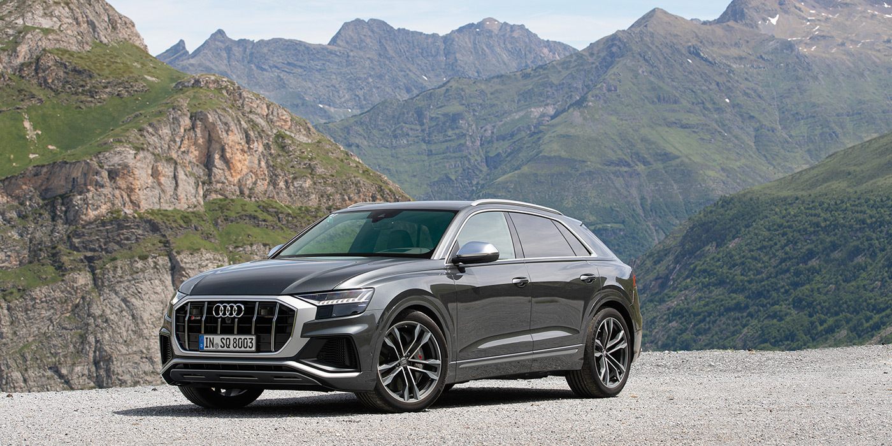
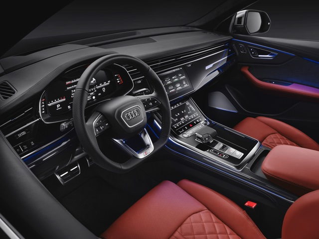
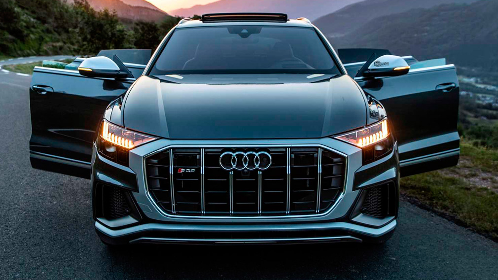
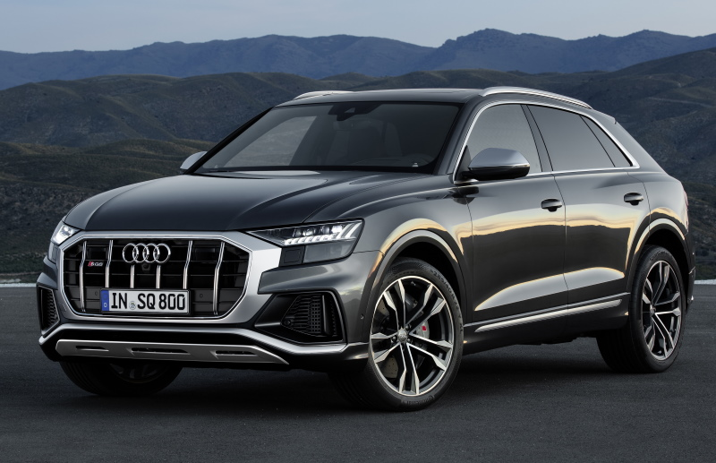

Компания Audi представила «подогретый» вариант флагманского купеобразного кроссовера Q8. Новинка по традиции получила в названии литеру «S», а отличить ее от обычной версии можно по более агрессивному дизайну экстерьра. На новом Ауди SQ8 2021 серебристая рамка решетки радиатора с металлическими вертикальными прутьями, иной дизайн воздухозаборников, выпускная систему с парой «двустволок» и особые 21-дюймовые колеса, хотя за доплату можно заказать и 22-дюймовые. Плюс на кузове автомобиля красуются соответствующие шильдики.
Интерьер данной модификации имеет комбинированную отделку из кожи и алькантары. Сиденья вседорожника получили ромбовидную прострочку, при этом на их спинках вышита буква «S». Из прочих особенностей салона стоит отметить алюминиевые накладки на порогах, педали из нержавеющей стали и спортивный руль. В движение полноприводный Audi SQ8 приводит 4,0-литровый дизель V8 с двумя турбинами, хорошо знакомый по модели SQ7. На «восьмерке» такой агрегат выдает 435 л.с. (в российской спецификации 421 л.с.) и 900 Нм, доступных уже с 1 000 об/мин.
Сочетаясь с восьмиступенчатым автоматом, движок позволяет кроссоверу «выстреливать» с 0 до 100 км/ч за 4,8 секунды, при этом максимальная скорость ограничена электроникой на 250 км/ч. За безопасное и эффективное замедление отвечают карбон-керамические тормоза с красными тормозными суппортами (в базе).
Заметим, что Ауди SQ8 является мягким гибридом. С правой стороны к блоку цилиндров здесь закреплен стартер-генератор с ременным приводом от коленвала, который отвечает за запуск двигателя, а также выполняет роль системы «start/stop».
Он подключен к собственной 48-вольтовой электросети и получает питание от литий-ионной батареи, расположенной в багажнике. Последняя также обеспечивает работоспособность электрического нагнетателя и активных стабилизаторов поперечной устойчивости, которые можно заказать за доплату. В списке базового оснащения кроссовера значатся адаптивная пневмоподвеска, позволяющая регулировать клиренс в диапазоне 90 мм, а также система «Audi’s Drive Select». Из опций для модели предложены активный дифференциал и полноуправляемое шасси.
Начало продаж нового Ауди SQ8 в в России пришлось на май двадцатого, цена модели у нас начинается от 7 455 000 рублей. В стандартное оснащение вседорожника включены диодная оптика, виртуальный щиток приборов, комбинированная отделка кресел, пневмоподвеска, 21-дюймовые колесные диски и многое другое. При этом двигатель для российского рынка был чуточку упрощен — его лишили электрического нагнетателя, в результате чего мощность была снижена с 435 до 421 л.с., но пиковый момент в 900 Нм остался прежним, как и время разгона за 4,8 секунды до сотни.
